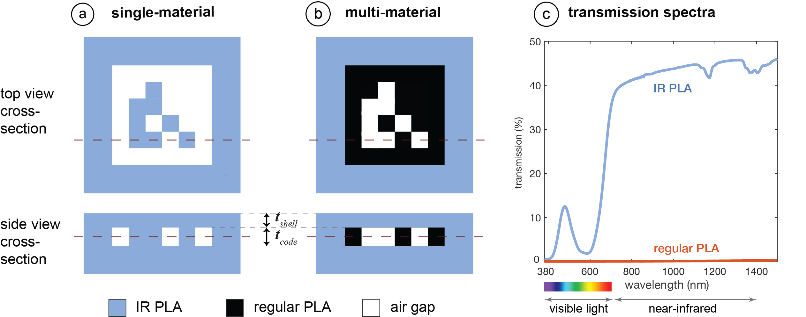
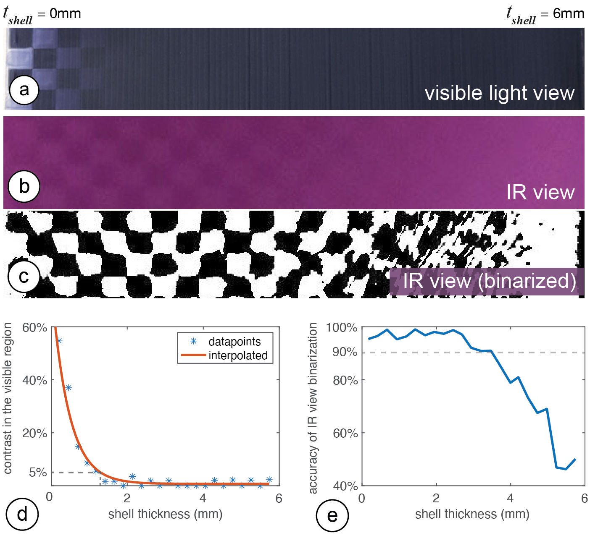
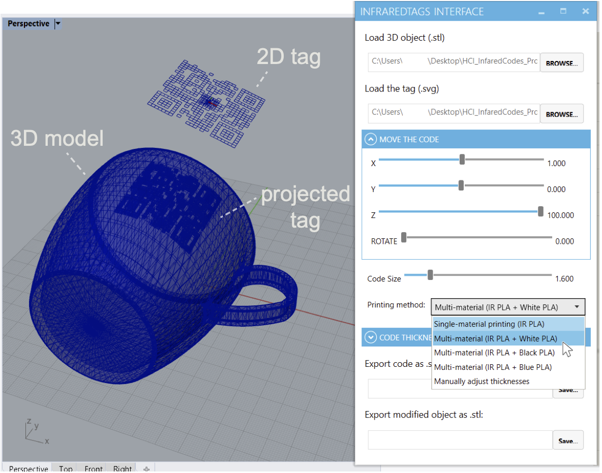
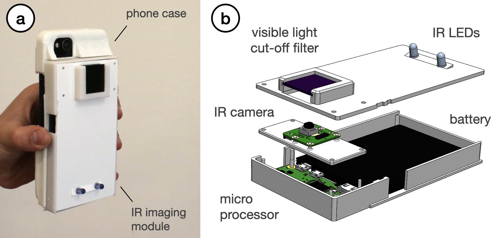
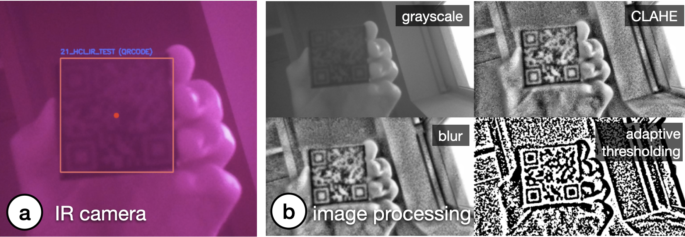
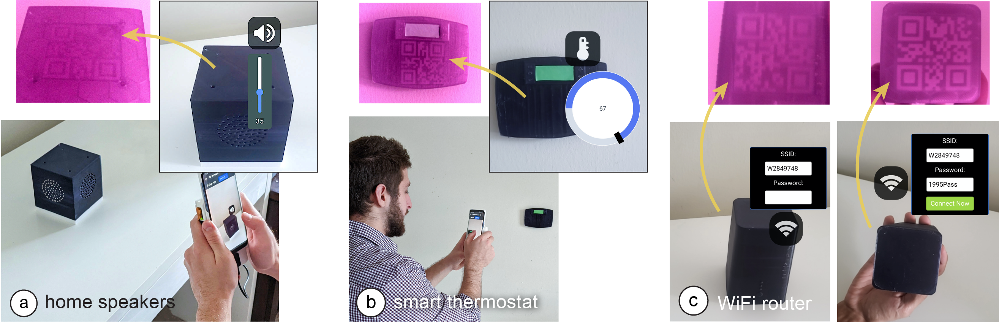
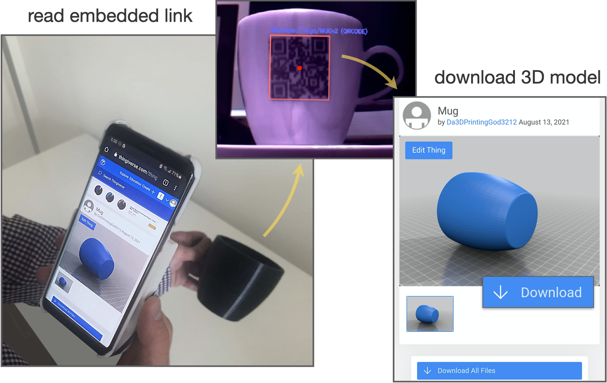
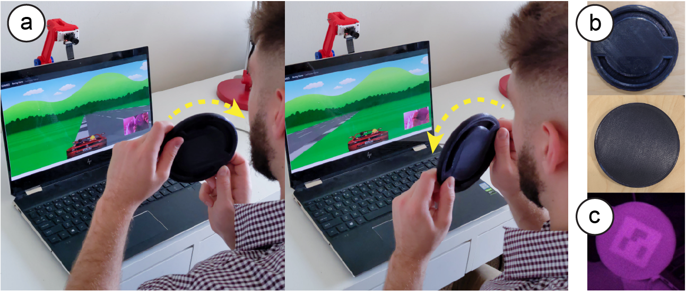
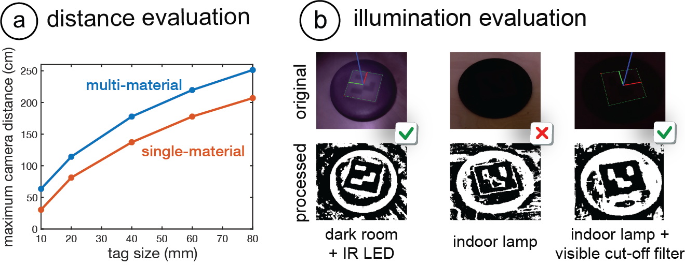

arXiv PDF Video Slides Videos
UIST Talk
Press
- MIT News
- CSAIL News
- MIT EECS News
- Popular Science
- Photonics.com
- Hackaday
- 3D Printing Industry
- 3D Printing Media Network
- IEEE Spectrum
- 3DPrint.com
- 3D Natives
- New Atlas
- K-MAG
- K-MAG (German)
- 3D-grenzenlos Magazin (German)
- 3Druck.com (German)
- LabMedya (Turkish)
- CHIP (Polish)
- geekweek (Polish)
- cnet (Japanese)
- Yahoo! News (Japanese)
- 163 (Chinese)
- cnBeta (Chinese)
InfraredTags: Embedding Invisible AR Markers and Barcodes Using Low-Cost, Infrared-Based 3D Printing and Imaging Tools

Figure 1. InfraredTags are 2D markers and barcodes embedded unobtrusively into 3D printed objects and can be detected using infrared cameras (top-right images). This allows real-time applications for (a) identifying and controlling devices in AR interfaces, (b) embedding metadata such as 3D model URLs into objects, and (c) tracking passive objects for tangible interactions.
Existing approaches for embedding unobtrusive tags inside 3D objects require either complex fabrication or high-cost imaging equipment. We present InfraredTags, which are 2D markers and barcodes imperceptible to the naked eye that can be 3D printed as part of objects, and detected rapidly by low-cost near-infrared cameras. We achieve this by printing objects from an infrared-transmitting filament, which infrared cameras can see through, and by having air gaps inside for the tag’s bits, which appear at a different intensity in the infrared image.
We built a user interface that facilitates the integration of common tags (QR codes, ArUco markers) with the object geometry to make them 3D printable as InfraredTags. We also developed a low-cost infrared imaging module that augments existing mobile devices and decodes tags using our image processing pipeline. Our evaluation shows that the tags can be detected with little near-infrared illumination (0.2lux) and from distances as far as 250cm. We demonstrate how our method enables various applications, such as object tracking and embedding metadata for augmented reality and tangible interactions.
INTRODUCTION
The ability to embed unobtrusive tags in 3D objects while they are being fabricated is of increasing relevance due to its many applications in augmented and virtual reality (AR/VR), packaging, tracking logistics, and robotics.
In the last decade, researchers have investigated several ways to insert tags that are imperceptible to the naked eye. One method to accomplish this is to leave air gaps inside the object that repre- sent the bits of a tag. For instance, AirCode [20] embeds air gaps underneath the surface of 3D printed objects and uses scattering of projected structured light through the material to detect where the air gaps are located. InfraStructs [34] also embeds air gaps into the object but scans it in 3D using terahertz imaging, which can penetrate better through material than visible light.
While both of these methods can embed tags inside 3D objects, they require complex hardware setups (e.g., a projector-camera setup as in AirCode), expensive equipment (e.g., a terahertz scanner as in InfraStructs), and long imaging time on the order of minutes. To address these issues, we propose a new method that combines air gaps inside the 3D printed structure with infrared transmitting filament. This makes the object semitransparent, and the air gaps are detectable when viewed with an infrared camera. Thus, our method only requires a low-cost infrared imaging module, and because the tag is detected from a single frame, scanning can be achieved much faster.
One method that has used infrared-based 3D printing materials is LayerCode [21], which creates 1D barcodes by printing objects from regular resin and resin mixed with near-infrared dye. Thus, while the printed objects look unmodified to humans, infrared cameras can read the codes. However, this method required a modified SLA printer with two tanks, custom firmware, and custom printing material. In contrast, our method uses more readily available low- cost materials.
In this paper, we present InfraredTags, a method to embed mark- ers and barcodes in the geometry of the object that does not require complex fabrication or high-cost imaging equipment. We accom- plish this by using off-the-shelf fused deposition modeling (FDM) 3D printers and a commercially available infrared (IR) transmitting filament [1] for fabrication, and an off-the-shelf near-infrared cam- era for detection. The main geometry of the object is 3D printed using the IR filament, while the tag itself is created by leaving air gaps for the bits. Because the main geometry is semitransparent in the IR region, the near-infrared camera can see through it and capture the air gaps, i.e., the marker, which shows up at a different intensity in the image. The contrast in the image can be further improved by dual-material 3D printing the bits from an infrared- opaque filament instead of leaving them as air gaps. Our method can embed 2D tags, such as QR codes and ArUco markers, and can embed multiple tags within the object, which allows for scanning from multiple angles while tolerating partial occlusion. To be able to detect InfraredTags with conventional smartphones, we added near-infrared imaging functionality by building a compact module that can be attached to existing mobile devices.
To enable users to embed the tags into 3D objects, we created a user interface that allows users to load tags into the editor and position them at the desired location. The editor then projects the tags into the 3D geometry to embed them with the object geometry. After fabrication, when the user is taking a photo with our imaging module, our custom image processing pipeline detects the tag by increasing the contrast to binarize it accurately. This enables new applications for interacting with 3D objects, such as remotely controlling appliances and devices in an augmented reality (AR) environment, as well as using existing passive objects as tangible game controllers.
In summary, our contributions are as follows:
- A method for embedding invisible tags into physical objects by 3D printing them on an off-the-shelf FDM 3D printer using an infrared transmitting filament.
- A user interface that allows users to embed the tags into the interior geometry of the object.
- An image processing pipeline for identifying the tags em- bedded inside 3D prints.
- A low-cost and compact infrared imaging module that aug- ments existing mobile devices.
- An evaluation of InfraredTags detection accuracy based on 3D printing and imaging constraints.
INFRAREDTAGS
InfraredTags are embedded such that the objects appear opaque and unmodified under visible light but reveal the tag under near-infrared light. We accomplish this by 3D printing the main geometry of the object using an infrared-transmitting filament, while the tag itself is created by leaving air gaps for the bits. Because the main geometry is semitransparent in the infrared region, the near-infrared camera can see through it and capture the air gaps, i.e., tag, which shows up at a different intensity in the image. We refer to the infrared- transmitting filament as infrared filament or IR filament in the remainder of the paper.
In the next sections, we describe the properties of the IR filament and the appropriate infrared camera, and then discuss how the IR filament can be used either as a standalone single-material print or together with another filament to create markers inside the object.
Infrared Filament
We acquired the IR filament from manufacturer 3dk.berlin [1] (ca. $5.86/100g). It is made out of polylactic acid (PLA), the most common FDM printing filament, and can be used at regular 3D printing extrusion temperatures. To the naked eye, the filament has a slightly translucent black color, however, when 3D printed in multiple layers it looks opaque.
IR Translucency: Since the manufacturer does not provide data on the light transmission characteristics for different wavelengths, we manually measured it using a UV/VIS/NIR spectrophotometer (PerkinElmer Lambda 1050). The transmission spectra for both the IR PLA and comparable regular black PLA filament are given in Figure 2c. Both spectra are for 1mm thick 3D printed samples. Because the regular PLA has close to 0% transmission in both visible and near-infrared regions, it always appears opaque. In contrast, the IR PLA transmits near-infrared at a much higher rate ( 45%) compared to visible light (0%-15%), and thus appears translucent in the IR region and mostly opaque in the visible light region.
Choosing an Infrared Camera
To choose the image sensor and filter that can see infrared light and thus can read the tag, we considered the following:
Filter: Almost all commercial cameras have an infrared cut-off filter to make camera images look similar to human vision. This filter thus prevents near-infrared light from reaching the image sensor. Since for our purposes, we want to capture the infrared light, we can either buy a camera that has this filter already removed, e.g., the Raspberry Pi NoIR camera module, or remove the embedded filter from a camera manually.
Image Sensor: Different cameras’ sensors have different sensitivity for different parts of the light spectrum. To best detect the markers, the sensor should have a high sensitivity in the maximum peak of the material’s near-infrared transmission. However, as can be seen in Figure 2c, since the transmission is similar across the entire infrared-region, all cameras that can detect light in the IR region would work for our purposes. For instance, off-the-shelf cheap cameras, such as the Raspberry Pi NoIR ($20), can detect up to 800- 850nm in the near-infrared range according to several vendors.
More expensive IR cameras that have sensitivity beyond the near-infrared range, such as FLIR ONE Pro3, can detect up to 14,000nm but may cost more than $400. However, since the infrared transmission does not increase much with higher infrared wavelengths, the low- cost camera is sufficient for our purposes.
Composition of the Tags and Materials
To create InfraredTags, we need to create two geometries with different IR transmission properties that form the object. The different IR transmission properties will cause the two geometries to appear with different intensities in the resulting infrared image. We found that there are two ways to accomplish this.

Figure 2: Material composition of the tags for a sample ArUco marker. We modify the interior of the object to embed the tag based on (a) single- or (b) multi-material printing. (c) The transmission spectrum of the IR PLA and regular PLA.
Single-Material Print (IR PLA): Our first method uses the IR filament for the main geometry of the object, air gaps for the outside bits of the marker, and IR filament for the inside bits of the marker as shown in Figure 2a. The contrast between the bits arises from the fact that the IR light transmission reduces by 45% per mm of IR filament (Section 3.1). Under IR illumination, the light rays first penetrate the IR filament walls of the 3D printed object and then hit the air gap inside the object or the filled interior area. When the object is imaged by an IR camera, the light intensity reduces for each pixel differently depending on whether it is located on an air gap or not. The rays that go through the air gaps lead to brighter pixels since they penetrate through less material than the other rays. This intensity difference in the resulting image is sufficient to convert the detected air gaps and filled areas into the original tag.
Multi-Material Print (IR PLA + Regular PLA): We explored multi-material 3D printing to further improve the contrast of the marker in the image. This second approach uses IR PLA for the main geometry of the object, regular PLA for the outside bits of the marker, and air gaps for the inside bits of the marker, as shown in Figure 2b. When the user takes an image, the IR rays penetrate the IR filament walls of the 3D printed object, and then either hit the air gap inside the object or the regular PLA. The air gaps will appear as brighter pixels since they transmit IR light, whereas the regular PLA filament will appear as darker pixels since it is nearly completely opaque in the IR region (Figure 2c). This leads to a higher contrast than the previously discussed single-material prints.
We also considered filling the air gaps with IR filament to avoid empty spaces inside the object geometry. However, this requires frequent switches between the two material nozzles for regular PLA and IR filament within short time frames, which can lead to smearing. We therefore kept the air gaps for objects that we printed with the dual-material approach (Figure 2b).
Code Geometry: When embedding the code (i.e., the 2D tag) into the geometry of the object, the code and the geometry surrounding it (i.e., the shell) need to have a certain thickness.
Shell Thickness: The shell thickness tshell should be large enough to create sufficient opaqueness so that the user cannot see the code with their eyes, but small enough to ensure detectability of the code with the IR camera.
Since the IR filament is slightly translucent to the naked eye, with small tshell , it becomes possible for the user to see the code inside the object (Figure 3a). Thus, for the lower bound of tshell , our goal is to find a value that achieves a contrast in the image smaller than 5% when the image is taken with a regular camera (i.e., with an IR cut-off filter). The image taken with regular camera represents the visible light region sensitivity, i.e., that of human vision. We chose 5% because this is the contrast value at which humans cannot differentiate contrast anymore [3].

Figure 3: Determining the shell thickness for a multi- material print with white PLA. As tshell increases, the checkerboard pattern becomes less visible in both the (a) visible camera and (b) IR camera image. Thus, it gets more challenging to (d) identify the contrast in the pattern for humans and to (c, e) binarize it correctly from the IR view.
On the opposite side, the larger tshell is, the more IR light it absorbs, and thus the darker the overall image becomes, reducing the contrast of the code in the IR region (Figure 3b). Thus, for the upper bound for tshell , our goal is to find the value at which the code is no longer detectable in the IR camera image.
For multi-material 3D printing, different filament colors can be used for the regular PLA part (i.e., the code). Each color requires a different shell thickness to prevent users from seeing the code. For instance, because the IR filament appears black in the visible light region, it blends more easily with black or blue PLA, thus requiring a thinner top layer to hide the resulting code than when the code is printed in white PLA. Table 2 shows the minimum shell thickness needed to make codes fabricated from different colors unobtrusive.
Code Thickness: While the shell thickness affects the overall contrast of the image in the visible region, the code thickness tcode determines the contrast between the individual bits of the embedded code in the IR region. If the code layer is too thin, there might not be enough contrast between the "white" and "black" bits, and thus the code will not be detectable.
We conducted a test similar to the one shown in Figure 3 in which we varied the tcode instead of tshell to determine which values provide enough contrast. The values are summarized in Table 2. Going below the values listed makes the material too thin such that the IR light starts going through the code bits, which reduces the contrast in IR view and thus detectability. Going above this value is possible but does not improve the contrast further.
|
Code thickness tcode |
|
Single-material |
1.08 mm |
2.00 mm |
Multi-material |
1.32 mm |
0.50 mm |
Multi-material |
1.08 mm |
0.50 mm |
Multi-material |
1.20 mm |
0.50 mm |
Lastly, an important observation we made is that IR filament spools ordered from the same manufacturer [1] at different times showed slightly different transmission characteristics. This is likely linked to the possibility that the manufacturer may have adjusted the amount of IR-translucent dye used to make the spools. We suggest that users conduct a similar contrast analysis as shown in Figure 3 to determine the optimal values for each new IR spool.
EMBEDDING AND READING INFRAREDTAGS
We next explain how users can embed codes into 3D objects using our user interface and then discuss our custom add-on for mobile devices and the corresponding image processing pipeline for tag detection.
User Interface for Encoding InfraredTags
Import and Position Tags: The user starts by loading the 3D model (.stl file) into our user interface, which is a custom add-on to an existing 3D editor (Rhinoceros 3D). Next, users import the tag as a 2D drawing (.svg) into the editor, which loads the marker into the 3D viewport. The marker is then automatically projected onto the surface of the 3D geometry (Figure 1a). Users can move the code around in the viewport and scale it to place it in the desired location on the 3D object.

Figure 4: InfraredTags embedding interface.
Select Printing Method: In the user interface, users can then select the printing method, i.e., if they want to fabricate the object with single material (IR-PLA only) or dual-material printing (IR-PLA + regular PLA). As a result, the user interface generates the geometry to accommodate the selected printing method. For example, for dual-material printing, it generates two .stl files, one for the main geometry and one for the embedded tag. The UI ensures that the tag is accurately spaced from the surface of the object (Table 2). The user can then slice both files with the 3D printer’s slicing software and print the object.
IR Imaging Module for Reading the Tags
InfraredTags can be read with digital devices that have an infrared camera attached to them. Even conventional USB webcams for personal computers can be used for this purpose by manually removing their infrared cut-off filter. Today, several recent smartphones already come with an IR camera either on the front (Apple iPhone X ) or the rear (OnePlus 8 Pro), however, the phones’ APIs may not allow developers to access these for non-native applications. Furthermore, not all mobile phones contain such a camera at the moment. To make our method compatible independent of the platform, we built an additional imaging add-on that can easily be attached to existing mobile phones.
Attaching the IR camera module: As shown in Figure 5, our add-on contains an infrared camera (model: Raspberry Pi NoIR). This camera can see infrared light since it has the IR cut-off filter removed that normally blocks IR light in regular cameras. Additionally, to remove the noise from visible light and improve detection, we added a visible light cut-off filter5, as well as 2 IR LEDs (940nm) which illuminate the object when it is dark. This add-on has two 3D printed parts: a smartphone case from flexible TPU filament that can be reprinted based on the user’s phone model, and the imaging module from rigid PLA filament that can be slid into this case. The imaging module has a Raspberry Pi Zero board and a battery and weighs 132g.

Figure 5: Infrared imaging module. (a) The module is attached onto a flexible case that can be 3D printed based on the user’s mobile device. (b) The module’s hardware components.
Detecting the Tag: To detect the tag, users open the InfraredTags detection application on their mobile phones and point the camera to their object. The application shows the phone camera’s view, which is what the user sees with their eyes instead of the IR view (Figure 1a). This way, more information can be overlaid on top of the regular view for AR applications. Under the hood, the imaging module continuously streams the images to our image processing server. If the server detects any tags, it sends the location and the encoded message to the smartphone app to show to the user.
SOFTWARE IMPLEMENTATION
In this section, we explain how we implemented the code embedding user interface, as well as our infrared imaging module and image processing pipeline.
UI Implementation
Our embedding user interface is based on Rhinoceros 3D CAD software (referred to as Rhino) and Grasshopper which is a visual programming language that runs within Rhino.
Importing the Tag & the 3D Model: After the user loads an STL file representing the 3D object, our software converts it into a mesh utilizing a Python subprocess function call. The script then centers the mesh along its center of mass. When the user imports a tag as an SVG file, it creates a plane that contains the paths that represent its bits, i.e., the air gaps. While the user is positioning the code, our software always orients the plane of the code to face the mesh’s surface. For this, it uses the normal on the mesh that is closest to the plane that holds the code.
Embedding the Tag into the Object: Depending on the type of embedding selected (i.e., single-material or multi-material 3D printing), the tag is projected into the object in one of two ways:
Single-Material: Our software first projects the tag onto the curved surface of the mesh and then translates it along the inverted closest mesh normal (i.e., pointing it towards the mesh) by the shell thickness (tshell , see Table 2). We then extrude the tag along the inverted normal by the code thickness (tcode ), which creates a new mesh inside the object representing the air gaps inside the 3D ge- ometry. To subtract the geometry that represents the air gaps from the overall geometry of the 3D object, we first invert the normals of the air gap mesh and then use a Boolean join mesh function to add the holes to the overall object geometry. This results in the completed mesh with the code, i.e., air gaps, embedded that the user can export as a single printable STL file.
Multi-Material: For multi-material prints, our software generates two meshes as illustrated in Figure 2b: one for the tag (printed in regular PLA) and one for the shell (printed in IR PLA). We start by following the steps described for the single-material approach, i.e., project the path representing the tag’s bits onto the curved surface, translate it inwards, and extrude it to generate the tag mesh. Next, we find the bounding box of the this mesh, invert its normals, and join it with the main object’s mesh. This creates a new mesh (i.e., the IR PLA shell), which once printed will have space inside where the regular PLA tag can sit.
Mobile IR Imaging
The mobile application used for capturing the tags is Web-based and has been developed using JavaScript. It uses Socket.IO to communicate with a server that runs the image processing pipeline for tag detection explained in Section 5.3.
The image processing server receives the images from the live stream shared by the microprocessor (Raspberry Pi Zero W) on the imaging module and constantly runs the detection algorithm. If a tag is detected, the server sends the tag’s location and the decoded message to the Web application, and shows it subsequently to the user. Because the imaging module does not use the resources of the user’s personal device and is Web-based, it is platform-independent and can be used with different mobile devices.
Image Processing Pipeline
InfraredTags are identified from the images captured by the IR camera on the mobile phone or attached imaging module. Although the tags are visible in the captured images, they need further processing to increase the contrast to be robustly read. We use OpenCV [4] to perform these image processing steps as shown in Figure 6.
Pre-processing the Image: We first convert the image to grayscale and apply a contrast limited adaptive histogram equalization (CLAHE) filter [22] to improve the local contrast (clipLimit = 20, tileGridSize = (8,8)). For our pipeline, CLAHE is more appropriate than a stan- dard histogram equalization as it redistributes the pixel intensity values based on distinct sections of the image [10]. To reduce the high-frequency noise that arises due to CLAHE, we smooth the image with a Gaussian blur filter. We then binarize the image using Gaussian adaptive thresholding to obtain black-and-white pixels that contain the code (constantSubtracted=4).

Figure 6: Image processing to read the tags. (a) Infrared cam- era view. (b) Individual processing steps needed to decode the QR code message: "HCI_IR_TEST".
Code Extraction: Once the binary image is generated, it is used to read the respective code using existing libraries, such as Dynamsoft or ZBar. On average, it takes 6ms to decode a 4x4 ArUco marker and 14ms to decode a 21x21 QR code from a single original frame. The images we use as input are 512x288 pixels; in the future, the detection could be made even faster by downsampling the image to a dimension optimal for both readability and speed.
The Effect of Tag Distance: The readability of the binarized tag depends on the parameters used for the pre-processing filters. More specifically, we found that a different Gaussian kernel for the blur (ksize) and block size for the adaptive threshold (blockSize) need to be used depending on the size of the tag in the captured image, i.e., the distance between the tag and the camera. This is especially important for QR codes since they generally have more and smaller bits that need to be correctly segmented.
One strategy to increase detection accuracy is to iterate through different combinations of the filter parameters. To identify the effect of the number of filter parameter combinations on detection accuracy, we ran the following experiment: We captured 124 images of a 21x21 QR code from different distances (15-80cm from the camera). We then generated 200 different filter parameter combinations and used them separately to process the captured images. We then evaluated which filter parameters correctly binarized the QR code. We found that even with a small number of filter combinations, we can have sufficient detection results comparable to existing QR code detection algorithms. For instance, three different filter combinations (Table 3) achieve an accuracy up to 79.03% (existing QR code readers achieve <57% for blurred tags). It is possible to further increase the number of filter parameter combinations to improve the accuracy further at the expense of detection time.
Accuracy |
|
(ksize=3, blockSize=23) |
56.45% |
(ksize=3, blockSize=23), |
70.97% |
(ksize=3, blockSize=23), |
79.03% |
APPLICATIONS
We demonstrate how InfraredTags enable different use cases for interactions with objects and devices, storing data in them, and tracking them for sensing user input.
Distant Augmented Reality (AR) Interactions with Physical Devices
InfraredTags can be embedded into physical devices and appliances to identify them individually through the embedded unique IDs and show the corresponding device controls that can be directly manipulated by the user.
In the application shown in Figure 7a and b, a user points their smartphone camera at the room and smart home appliances are identified through their InfraredTags, which are imperceptible to the human eye. A control menu is shown in the AR view, where the user can adjust the volume of the speaker or set a temperature for the thermostat. InfraredTags could also allow multiple appliances of the same model (e.g., multiple smart speakers or lamps) in the room to be identified individually, which is not possible with standard computer vision-based object classification approaches.
Multiple tags on a single object for spatial awareness: Furthermore, InfraredTags enable multiple tags to be embedded in the same object. This enables different applications. For instance, when an object is partially occluded, multiple tags in the object can allow the capture of tags from different angles. Another application is to enable spatially aware AR controls where different settings appear at different locations within the same object. For example, Figure 7c illustrates how the front, side, and top faces of a WiFi router only have its network name (SSID) information, whereas its bottom also shows the password information, which can automatically pair the router to the phone. This enables quick pairing and authentication with devices without users having to type out complex character strings, while maintaining the physical use metaphors, such as the paper slip containing the password typically attached to the base of the router. While we demonstrate this application for mobile AR, InfraredTags could also enable lower friction, distant interactions with physical devices for head-mounted AR glasses.

Figure 7: Controlling appliances using a mobile AR application. The user points at (a) the home speakers to adjust its volume, and the (b) thermostat to adjust the temperature. The infrared camera in the phone’s case identifies the appliances by reading the embedded QR codes. (c) Pairing a phone with a WiFi router, whose SSID is visible from all sides but the password is visible only from its bottom.
Embedding Metadata about Objects
Spatially embedding metadata or documentation information within the object itself can provide richer contextualization and allow information sharing [8]. For example, we can embed the object’s fabrication/origin link (e.g., a shortened Thingiverse URL) as an InfraredTag for users to look up in case they would like to get more information from its creator or 3D print it themselves as shown in Figure 8. Other types of metadata that could be embedded include user manuals, expiry dates, date of fabrication, materials used to fabricate the object, weight, or size information.

Tangible Interactions: Use Anything as a Game Controller
Because fiducial markers can be embedded as InfraredTags, they can be used to track the object’s movement. Thus, any passive object can be used as a controller that can be held by users when playing video games.
Figure 9 shows a 3D printed wheel with no electronics, being used as a game controller. The wheel contains an ArUco marker InfraredTag which is used to track the wheel’s location and orienta- tion. Even though the wheel is rotationally symmetric, the infrared camera can see the square marker inside and infer the wheel’s posi- tion and orientation. Our method does not require any electronics as opposed to other approaches [37].
While we demonstrate an application where the user faces a screen with a camera behind it, this could be used to enable passive objects to serve as controllers for AR/VR headsets with egocentric cameras. Such an application scenario could be particularly suitable for headsets like HoloLens 2, which comes with an integrated infrared camera [31] that could be utilized for InfraredTag detection in the future. Even though the tag would be facing the user, it would not be visible to the user but can still be identified by the headset.

Figure 9: Using passive objects (a) as a game controller. (b) This wheel is black under visible light and has no elec- tronic components. (c) The fiducial marker embedded inside is only visible to an infrared camera.
EVALUATION OF THE DETECTION
In this section, we evaluate how InfraredTag detection is affected by fabrication- and environment-related factors.
Marker size: By following a test procedure similar to the one shown in Figure 3, we determined that the smallest detectable 4x4 ArUco marker printable is 9mm wide for single-material prints and 6mm wide for multi-material prints. The resolution for multi-material prints is better than single-material ones because the large transmission difference between the two distinct materials makes it easier for the image sensor to resolve the border between the marker bits. On the other hand, in single-material prints, the luminosity of an air gap resembles a 2D Gaussian distribution, i.e., the intensity gets higher towards the center. Thus, larger bits are needed to discern the borders between a single-material marker’s bits.

Figure 10: Detection evaluation. (a) Maximum detection distance for single- and multi-material ArUco markers. (b) Cases where the IR LED and visible cut-off filter improve detection.
Distance: To test the limits of our detection method, we measured the maximum distance tags of different sizes can be detected. This was done for both single-material (IR PLA) and multi-material (IR PLA + regular black PLA) prints. The marker size range we evaluated was 10-80mm for 4x4 ArUco markers, which would translate to a range for 42-336mm for 21x21 QR codes (can store up to 25 numeric characters). The results are given in Figure 10a, which shows that multi-material codes can be detected from further away than single-material ones. The results are given for the filter parameters with the best detection outcome (Section 5.3).
Lighting conditions: For InfraredTags to be discernible in NIR camera images, there has to be enough NIR illumination in the scene. We measured the minimum NIR intensity needed to detect 4x4 ArUco markers using a lux meter which had a visible light cut-off filter (720nm) attached. We found that just a tiny amount of NIR is sufficient for this, i.e., that at least 1.1 lux is needed for single-material prints, and 0.2 lux for multi-material prints.
Because sunlight also contains NIR wavelengths, the tags are detectable outdoors and also in an indoor areas that have windows during daytime. We also noticed that many lamps used for indoor lighting emit enough NIR to detect the codes at nighttime (e.g., 1.5 lux in our office). Furthermore, the IR LEDs on our imaging module (Section 4.2) provide high enough intensity to sufficiently illuminate multi-material markers even in complete darkness (Figure 10b). In the future, brighter LEDs can be added to support single-material prints in such difficult detection scenarios.
The visible light-cut off filter used on our IR imaging module also improves detection in spite of challenging lighting conditions. For instance, the last two columns in Figure 10b shows how certain print artifacts on the object’s surface might create noise in the IR camera image, which is reduced when the cut-off filter is added. This is particularly helpful for single-material prints, which are more challenging to identify.
DISCUSSION
In this section, we discuss the limitations of our approach and how it could be further developed in future research.
Print Resolution: In this project, we used FDM printers, whose printing resolution is restricted by the size of its nozzle that extrudes the material, and a low-cost camera that has an 8MP resolution. In the future, even smaller InfraredTags can be fabricated by applying our method to printing technologies with higher resolution, such as stereolithography (SLA). Correspondingly, higher-resolution cam- eras with better aperture can be used to identify these smaller details (e.g., Samsung’s latest 200MP smartphone camera sensor [28]). This would allow embedding more information in the same area.
Discoverability vs. Unobtrusiveness: For InfraredTags to be de- tected, the user should orient the near-infrared camera such that the embedded marker is in the frame. However, similar to related projects such as AirCode [20] and InfraStructs [34], this might be challenging since the marker is invisible to users and thus they might not know where exactly on the object to point the camera at. For objects with flat surfaces, this can be compensated for by embedding a marker on each face (e.g., on the six faces of a cube). This way, at least one marker will always be visible to the camera. Similar to how a QR code printed on a sheet of paper is detectable from different angles, the flat InfraredTag will maintain its shape when viewed from different angles (e.g., the router Section 6.1c).
However, detection of codes on curved objects poses a bigger challenge. This is because a 2D code projected onto a curved surface (e.g., the mug in Section 6.2) has a warped outline when viewed from an angle far away from its center. As a solution, we plan to pad the whole object surface with the same code, similar to ChArUco (a combination of ArUcos and chessboard patterns) [16], so that at least one of the codes appears undistorted in the captured image. Also, for curved objects, other tag types that are more robust to deformations could be used [36] in the future. Alternatively, a small visible or tactile marker in the form of a notch could be added to the surface of the object (corresponding to where the code is embedded) to help guide the user to the marker.
Other Color and Materials: While we only used black IR PLA in this project, manufacturers could produce filaments of other colors that have similar transmission characteristics to create more customized or multi-material prints in rigid and flexible forms [9]. We also plan to combine the IR PLA filament with IR retro-reflective printing filaments to increase the marker contrast even more.
CONCLUSION
In this paper, we presented InfraredTags, a low-cost method to integrate commonly used 2D tags into 3D objects by using infrared transmitting filaments. We explained how this filament can be used by adding air gaps inside the object or by combining it with regular, opaque filaments, which increases the tag contrast even more. We discussed what kind of camera is appropriate for detecting InfraredTags and what kind of code geometry should be used for best detection, while ensuring unobtrusiveness to the naked eye. After introducing our tag embedding user interface and mobile infrared imaging module, we presented a wide range of applications for identifying devices and interacting with them in AR, storing information in physical objects, and tracking them for interactive, tangible games. Finally, we evaluated our method in terms of marker size, detection distance, and lighting conditions.
ACKNOWLEDGMENTS
We would like to thank Raul Garcia-Martin for offering insights into image processing approaches for near-infrared imaging and Mackenzie Leake for proofreading our manuscript. We also thank the anonymous authors for their constructive feedback. This work was supported by an Alfred P. Sloan Foundation Research Fellowship.
.